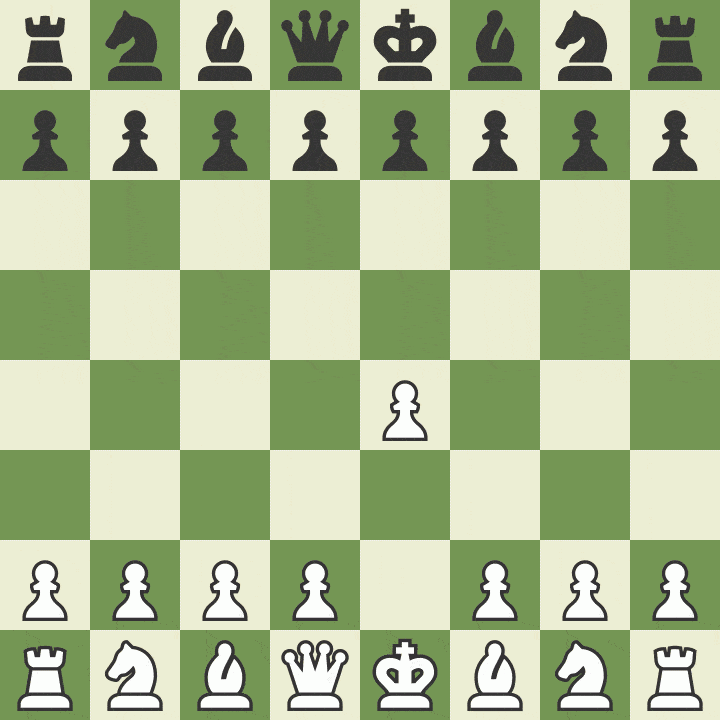

Les échecs viennent d'Inde : ils descendent du chaturanga, un jeu pratiqué avant l'an 600. Ils gagnent ensuite l'Europe de l'Ouest, où leurs règles évoluent jusqu'au jeu actuel. Parmi les premiers grands joueurs figure l'Espagnol Ruy Lopez, qui étudie l'ouverture portant son nom dans un livre paru en 1561.
En 1749, le Français François-André Philidor publie Analyse du jeu d'échecs et révolutionne la théorie : nouvelles ouvertures, « position de Philidor » en finale de tours, et sa célèbre phrase « Les pions sont l'âme des échecs ».
Au XIXe siècle, les échecs prennent leur forme moderne. En 1849, les pièces « Staunton » sont lancées et deviennent la référence en tournoi. Les pendules apparaissent aussi : avant elles, une partie pouvait durer 14 heures !
C'est l'époque du jeu « romantique », où l'on attaque à tout prix. L'Américain Paul Morphy en est le meilleur représentant : il bat tous les grands joueurs européens et signe en 1858 la célèbre « partie de l'Opéra », l'une des plus belles de l'histoire.
Source : Chess.com, « L'Histoire des échecs, des origines à Magnus Carlsen »